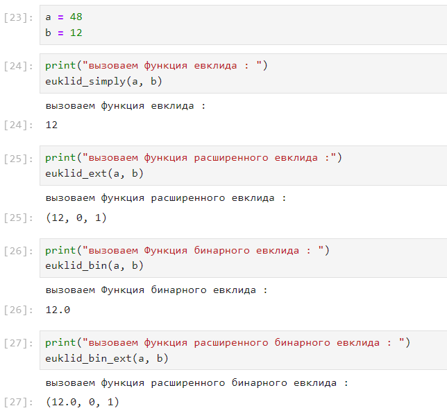

Изучение алгоритма Евклида нахождения Наибольший общий делитель и его
вариаций.
Выполнение лабораторной
работы
Наибольший общий делитель
Наибольший общий делитель (НОД) – это наибольшее целое число, на
которое два или более целых числа можно поделить без остатка. Например,
НОД чисел 12 и 18 равен 6, потому что 6 является наибольшим числом,
которое делит оба этих числа на целое.
Алгоритм Евклида
Вход. Целые числа a, b; 0 < b < a.
Выход. d= НОД(a, b).
шаг 1. Положить r0 = a, r1 = b, i = 1.
шаг 2. Найти остаток ri + 1 от
деления ri–1 на ri.
шаг 3. Если ri + 1 = 0, то
положить d = ri.
В противном случае положить i = i + 1 и вернуться на
шаг 2.
шаг 4. Результат: d.
Бинарный алгоритм Евклида
Вход. Целые числа a, b; 0 < b ≤ a.
Выход. d= HOД(a, b).
Положить g = 1.
Пока оба числа a и b четные, выполнять a = a/2, b = b/2, g = 2g
до получения хотя бы одного нечетного значения a или b.
Положить u = a, v = b.
Пока u ≠ 0, выполнять
следующие действия.
Пока u четное, полагать
u = u/2.
Пока v четное, полагать
v = v/2.
При u ≥ v
положить u = u − v. В
противном случае положить v = v–u.
Положить d = gv.
Результат: d
Расширенный алгоритм Евклида
Вход. Целые числа a, b; 0 < b ≤ a.
Выход: d= НОД(a, b); такие целые числа
x, y, что ax + by = d.
Разделить с остатком ri–1 на ri : r(i–1) = qi * ri + ri + 1
Если r(i + 1) = 0, то
положить d = ri,
x = xi,
y = yi.
В противном случае положить x(i + 1) = (x(i–1)–qi * xi,
y(i + 1) = y(i–1)–qi * yi,
i = i + 1 и вернуться
на шаг 2.
Результат: d, x, y.
Пример работы алгоритма

Работа алгоритма
Выводы
Результаты выполнения
лабораторной работы
Изучил алгоритм Евклида нахождения Наибольший общий делитель.